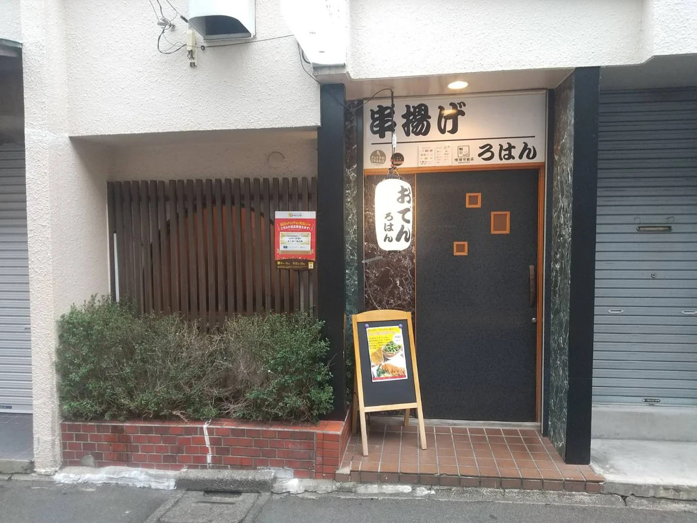

ACCESS & INFORMATION
店舗案内
いわき駅から徒歩5分。
今夜は、ろはんへ。

Google マップで道順を見るKUSHIAGE & SAKANA ROHAN
串揚げと魚 ろはん
- 所在地
- 〒970-8026
福島県いわき市田町14-3 - アクセス
- いわき駅から徒歩5分（約260m）
- 営業時間
- 17:00–22:00
料理 L.O. 21:30
ドリンク L.O. 22:00 - 定休日
- 月曜日・日曜日
- 電話番号
- 0246-25-3175
- 駐車場
- なし
- 喫煙について
- 全席喫煙可
20歳未満の方は同伴の場合も入店不可
臨時休業などのお知らせはInstagramをご覧ください。
Instagramでお知らせを見るRESERVATION
今夜は、ろはんへ。
お席のご予約は、ネットまたはお電話で。
おひとりの一杯も、大切な人との食事も。